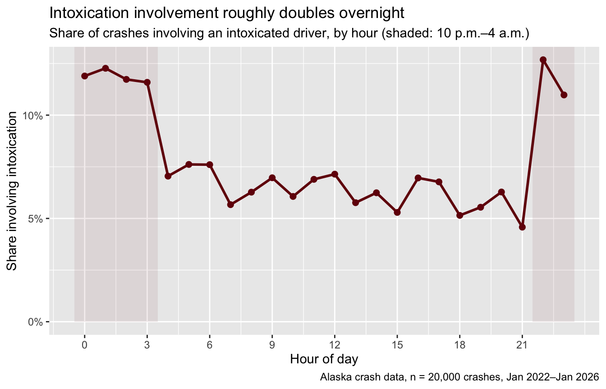
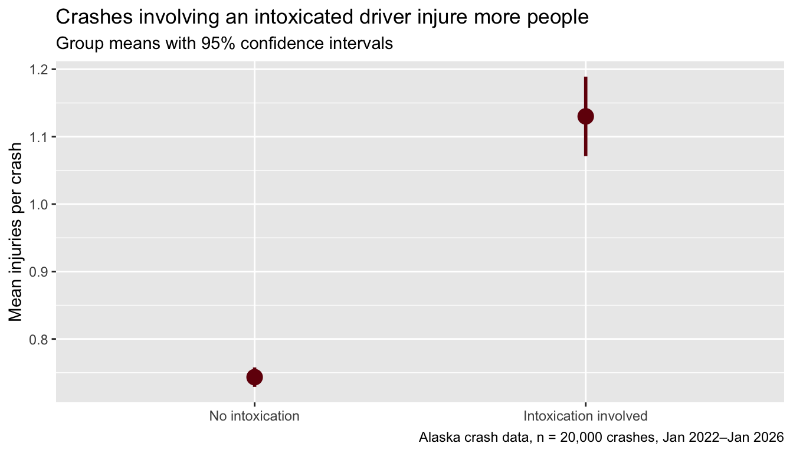

Lab 7 · The Full Pipeline: Applied Data Workshop
CRJU 705 · Session 7
Goal: run the entire analysis pipeline — import → tidy → transform → visualize → test — twice in one sitting: once with me on the Alaska crash data, and once on the dataset you’re proposing for your final project. This lab is the capstone of the R4DS thread (Sessions 2–6); nothing here is new, but it’s the first time you assemble all of it without scaffolding. Skim back over R4DS Ch. 1–8 wherever you feel wobbly.
How labs work: run the Setup chunk as-is, follow the Walkthrough along with me, then complete the Your Turn tasks in your own script. The Exit Ticket gets submitted to Canvas before you leave.
This lab is longer than usual on purpose — the walkthrough moves fast (you have seen every piece before), and most of today’s class time belongs to the Your Turn section, where the data is yours and the problems are real. The script you build today becomes the backbone of Homework 7.
Setup
Open RStudio, start a new R script, and run:
Old friend: 20,000 Alaska traffic-crash incidents (simulated, but realistic) — the same file you imported in Lab 5 and tested in Homework 5. Today it plays the role of your project dataset: we’ll take it from raw file to finished test, and every step is one you’ll repeat on your own data within the hour.
Walkthrough
Import — done right, done fast
In Lab 5 we discovered read_csv() leaves date as character (it stores "02/20/2023", and readr only auto-detects ISO dates). You know two fixes; use whichever you like, but verify the parse either way:
Both checks matter. sum(is.na()) catches values that failed to parse; range() catches values that parsed into nonsense (a typo like 02/20/0223 parses fine — into the third century).
Most agency data does. Remember the three traps from Lab 5 — a junk ...1 column, dates/times imported as datetimes, and the text "NA" masquerading as missing — and the one-block fix pattern:
mydata <- read_excel("my-file.xlsx", na = c("", "NA")) |>
select(-`...1`) |> # only if the junk column exists
mutate(date = as_date(date)) # flatten datetime to date
# Full story: Lab 5, "The messier cousin: Excel"Audit the damage: missingness
Before you trust any column, count what’s missing in all of them. This pattern — summarize every column, then pivot the one-row result into a readable table — reuses across() and pivot_longer() from Sessions 3–4:
crashes |>
summarize(across(everything(), \(x) sum(is.na(x)))) |>
pivot_longer(everything(), names_to = "column", values_to = "n_missing") |>
filter(n_missing > 0)# A tibble: 4 × 2
column n_missing
<chr> <int>
1 secondary_cause 11040
2 vehicle2_make 4019
3 vehicle2_model 4019
4 vehicle2_year 4019Four columns have missing values — and all four are missing for a reason. vehicle2_make, vehicle2_model, and vehicle2_year are NA exactly 4,019 times: the number of single-vehicle crashes, which have no second vehicle to describe. secondary_cause is NA when a crash had only one recorded cause. This is structural missingness — the NAs are correct, not broken.
The question to ask of your own data is never just “how much is missing?” but “why is it missing?” Structural gaps are fine. Gaps in a variable you need, for reasons you can’t explain, are a feasibility problem.
Derive the variables you actually need
The crash file has date and time — but our questions are about weekends and late nights, and no file ever ships with your analysis variables built. mutate() + lubridate:
Always check a derived variable before using it — a count() catches most logic errors instantly:
crashes |> count(weekend)# A tibble: 2 × 2
weekend n
<lgl> <int>
1 FALSE 14404
2 TRUE 5596crashes |> count(night)# A tibble: 2 × 2
night n
<lgl> <int>
1 FALSE 14972
2 TRUE 5028Sanity check the magnitudes: weekends are 2 of 7 days (29%) and hold 28% of crashes; the night window is 6 of 24 hours (25%) and holds 25% of crashes. Neither flag concentrates crashes — so far. The payoff comes next.
Describe: group summaries
Two questions, two summarize() calls. First — when do intoxication-involved crashes happen?
# A tibble: 2 × 3
night crashes pct_intox
<lgl> <int> <dbl>
1 TRUE 5028 0.119
2 FALSE 14972 0.0634Intoxication involvement is 11.9% at night versus 6.3% in daytime — nearly double. (Weekends show a much smaller bump: 8.9% vs. 7.3%. Try it.) Crashes don’t pile up at night, but intoxicated crashes do.
Second — the Homework 5 question, revisited with the whole pipeline behind it: do crashes involving an intoxicated driver injure more people? Build the labeled factor now; the plots and both tests below all use it:
# A tibble: 2 × 4
intox_group crashes mean_inj sd_inj
<fct> <int> <dbl> <dbl>
1 No intoxication 18455 0.743 0.997
2 Intoxication involved 1545 1.13 1.18 0.74 vs. 1.13 injured people per crash, with the intoxication group also more variable. Point estimates so far — inference comes two steps down the pipeline.
Visualize: two polished plots
“Polished” means: real labels, real title, units on the axes, and a caption saying where the data came from. A plot you could paste into a report — which is exactly what Homework 7 asks for.
Plot 1 — the derived variables earn their keep. Share of crashes involving intoxication, by hour of day:
hourly <- crashes |>
summarize(pct_intox = mean(intox_any), .by = hour) |>
arrange(hour)
ggplot(hourly, aes(hour, pct_intox)) +
annotate("rect", xmin = 21.5, xmax = 23.5, ymin = 0, ymax = Inf,
fill = "#73000A", alpha = 0.08) +
annotate("rect", xmin = -0.5, xmax = 3.5, ymin = 0, ymax = Inf,
fill = "#73000A", alpha = 0.08) +
geom_line(color = "#73000A", linewidth = 1) +
geom_point(color = "#73000A", size = 2) +
scale_x_continuous(breaks = seq(0, 23, 3)) +
scale_y_continuous(labels = scales::label_percent(), limits = c(0, NA)) +
labs(
title = "Intoxication involvement roughly doubles overnight",
subtitle = "Share of crashes involving an intoxicated driver, by hour (shaded: 10 p.m.–4 a.m.)",
x = "Hour of day", y = "Share involving intoxication",
caption = "Alaska crash data, n = 20,000 crashes, Jan 2022–Jan 2026"
)
Read it honestly: the elevated window runs from about 10 p.m. through 3 a.m. (11–13%), daytime mostly sits between 5% and 8%, and 9 p.m. is actually the lowest hour of the day. Real patterns have ragged edges — describe the pattern you see, not the one you expected.
Plot 2 — set up the test. Group means with 95% confidence intervals, computed by hand exactly as in Session 5:
inj_summary <- crashes |>
summarize(n = n(), mean_inj = mean(injuries), sd_inj = sd(injuries),
.by = intox_group) |>
mutate(
se = sd_inj / sqrt(n),
ci_lo = mean_inj - 1.96 * se,
ci_hi = mean_inj + 1.96 * se
)
ggplot(inj_summary, aes(intox_group, mean_inj)) +
geom_pointrange(aes(ymin = ci_lo, ymax = ci_hi),
color = "#73000A", linewidth = 1, size = 0.9) +
labs(
title = "Crashes involving an intoxicated driver injure more people",
subtitle = "Group means with 95% confidence intervals",
x = NULL, y = "Mean injuries per crash",
caption = "Alaska crash data, n = 20,000 crashes, Jan 2022–Jan 2026"
)
The intervals are narrow (huge samples) and nowhere near overlapping. You can already guess what the tests will say — good. A test should rarely surprise you after honest descriptives; it should formalize what you can see.
The test, both ways
The frequentist test, exactly as in Homework 5:
t.test(injuries ~ intox_any, data = crashes)
Welch Two Sample t-test
data: injuries by intox_any
t = -12.489, df = 1732.6, p-value < 2.2e-16
alternative hypothesis: true difference in means between group 0 and group 1 is not equal to 0
95 percent confidence interval:
-0.4474533 -0.3259893
sample estimates:
mean in group 0 mean in group 1
0.7433758 1.1300971 Same reading as Homework 5: R computes group 0 − group 1, so the negative t and negative interval mean the intoxication group is higher. Flip the signs when you write it up in the other direction.
Now the same comparison in the Bayesian framework from Session 6. Two quirks of ttestBF(): the grouping variable must be a factor (our intox_group, built above), and if you pass it a tibble it politely converts it to a plain data frame (you may see a warning saying so — harmless):
ttestBF(formula = injuries ~ intox_group, data = crashes)Bayes factor analysis
--------------
[1] Alt., r=0.707 : 2.133904e+43 ±0%
Against denominator:
Null, mu1-mu2 = 0
---
Bayes factor type: BFindepSample, JZSWrite it up
The pipeline ends in sentences, not output blocks. A write-up that would earn full credit in Homework 7:
Crashes involving an intoxicated driver injured more people on average (M = 1.13, SD = 1.18, n = 1,545) than crashes with no intoxication involved (M = 0.74, SD = 1.00, n = 18,455). A Welch two-sample t-test found the difference statistically significant, t(1732.6) = 12.5, p < .001, with a 95% confidence interval of 0.33 to 0.45 additional injured people per intoxication-involved crash. A Bayesian t-test agreed emphatically: BF10 ≈ 2 × 1043, meaning the data are astronomically better predicted by a model with a group difference than one without. Because this is an observational comparison, the difference describes these crashes but does not isolate intoxication’s causal effect — intoxication-involved crashes also differ in when and where they occur.
Every number in that paragraph came from output you just produced. Notice what the paragraph does: reports both group descriptives, both tests, the interval in plain units, and names the limit of what the comparison can claim.
Save the clean version
You just spent real effort getting crashes into shape. Bank it:
write_csv(crashes, "crash-ak-clean.csv")Do the same with your project data once its cleaning stabilizes — raw file untouched, clean file separately named, and the script that turns one into the other saved. That script is the actual asset: anyone (including future you) can rebuild your clean data from the raw file.
Your Turn: Your Project Data
From here, the dataset is the one you’re proposing for your final project — see the final project page for what qualifies. Work in the same script, and comment as you go: this becomes Homework 7.
A few ground rules:
- Brought two candidate datasets? Run this sequence on the one you think is stronger; repeat what you can on the second and compare their damage reports.
-
Download fell through / still dataset-hunting? Use the course Chicago data (
https://smourtgos.github.io/crju705/data/chicago-crimes-2025.csv) as a stand-in today so you still practice the sequence — but Homework 7 requires your own dataset, so the hunt continues tonight. - If a step fails, that is a finding, not a failure. Capture the error message in a comment. “My date column won’t parse and here is why” is exactly the kind of thing today exists to surface.
1. Import it. Get your dataset into R with read_csv(), read_excel(), or whatever its format demands. If the import fights you — encoding, headers, multiple sheets, the ...1 column — document the fight in comments. Fix anything R guessed wrong (dates as character are the classic; you know two repairs).
# your code here2. First look. glimpse() it. In comments: how many rows, how many columns, and — most important — what is the unit of analysis? (One row = one what? One crime? One person? One agency-year? If you can’t answer this, nothing downstream is interpretable.)
# your code here3. Count the missingness. Use the across() + pivot_longer() pattern from the walkthrough. In a comment: which variables have gaps, and — the real question — do you know why? Structural, or trouble?
# your code here4. One summary table. A summarize() (grouped, if that suits your data) or a count() of a variable you actually plan to use in the final project. In a comment, state what it shows in one precise sentence.
# your code here5. One plot. A polished ggplot — labels, title, units — showing something real about a key variable: its distribution, a group comparison, a trend. If your first attempt looks like nothing, say so and try a different variable; discovering that a variable is unusable is progress.
# your code here6. The feasibility memo. In comments, write three sentences: (1) whether this dataset can plausibly answer your research question, (2) the single biggest cleaning or measurement obstacle you found today, and (3) what you would need to fix, learn, or obtain before Session 8. Be honest — a dataset that dies today costs you nothing; one that dies in November costs you the project.
# your code hereExit Ticket
Submit a short note to Canvas before you leave, containing:
- Your proposed dataset’s name and source (agency, repository, or URL) — both candidates if you’re still deciding
- The biggest cleaning obstacle you found in it today, in one or two sentences
- One thing you still need to figure out or confirm before formally committing to this dataset in Homework 7